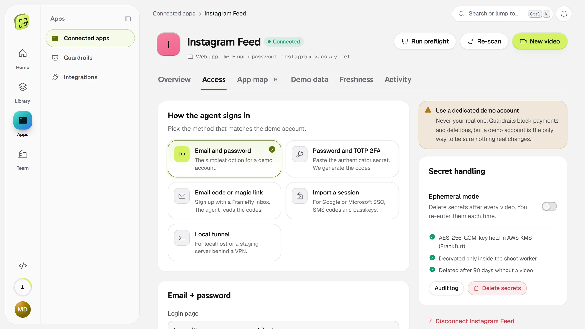
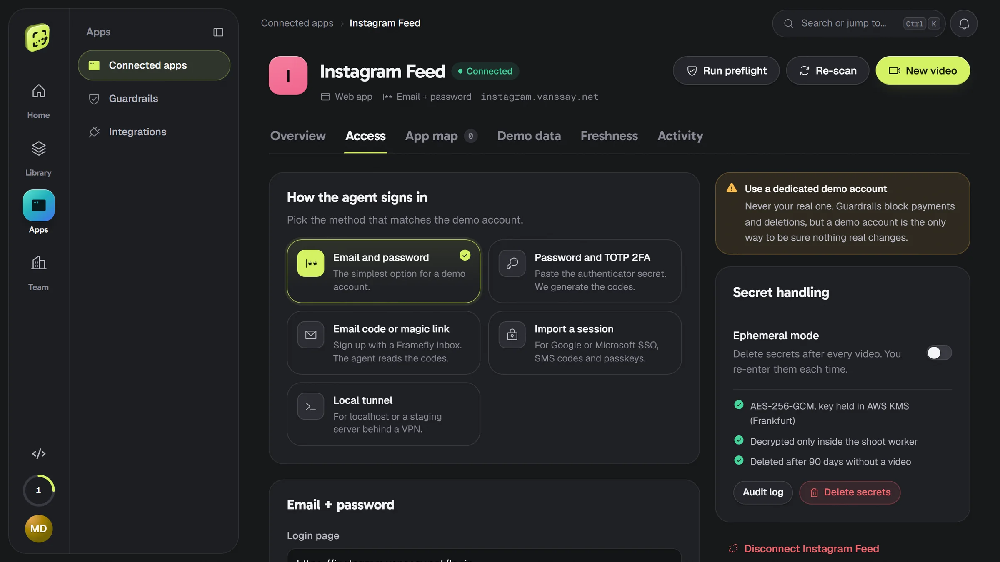
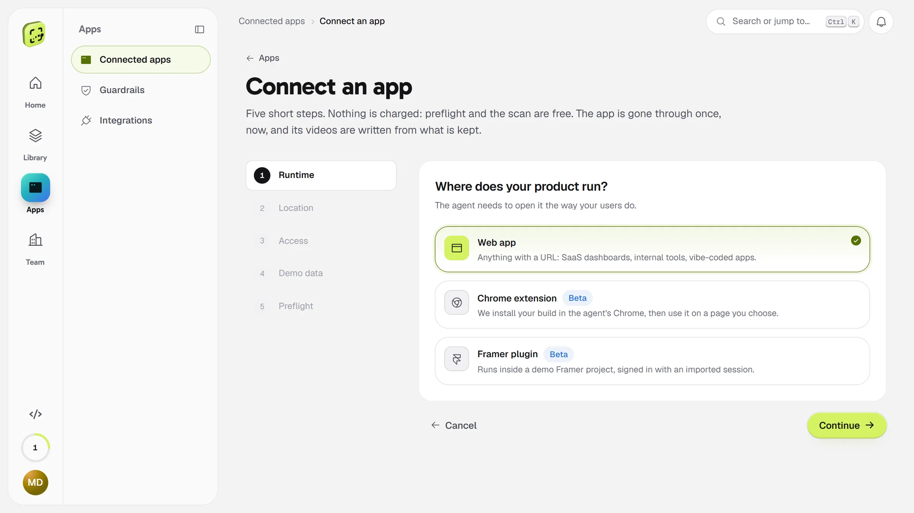
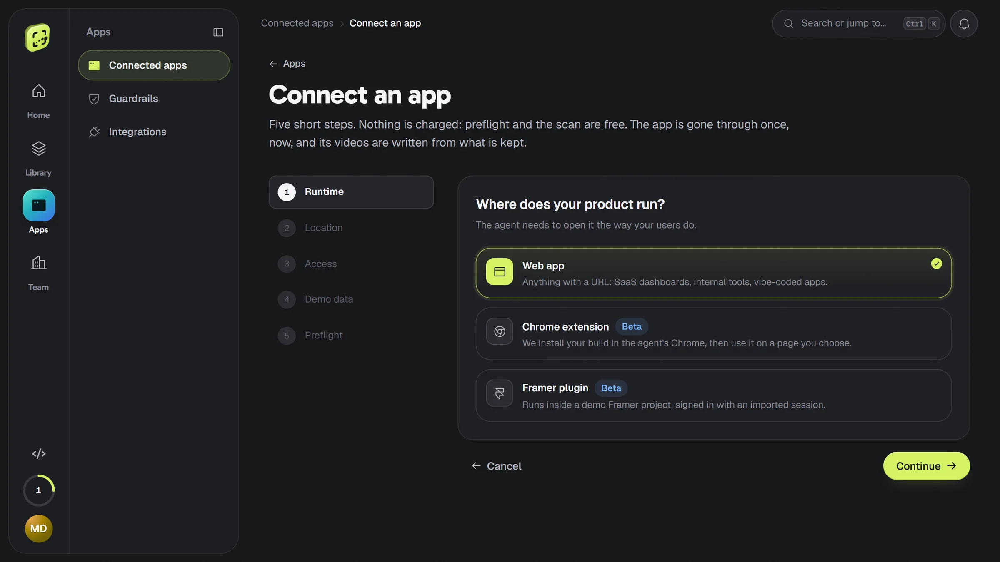
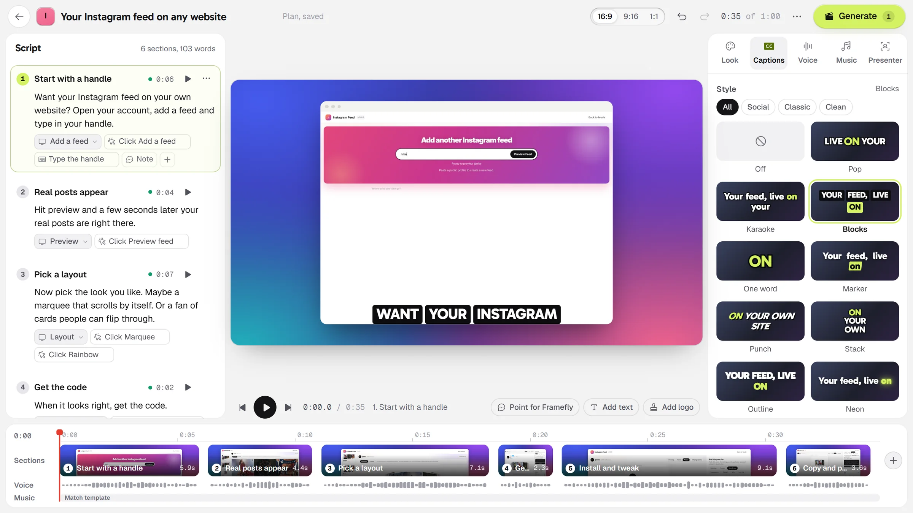
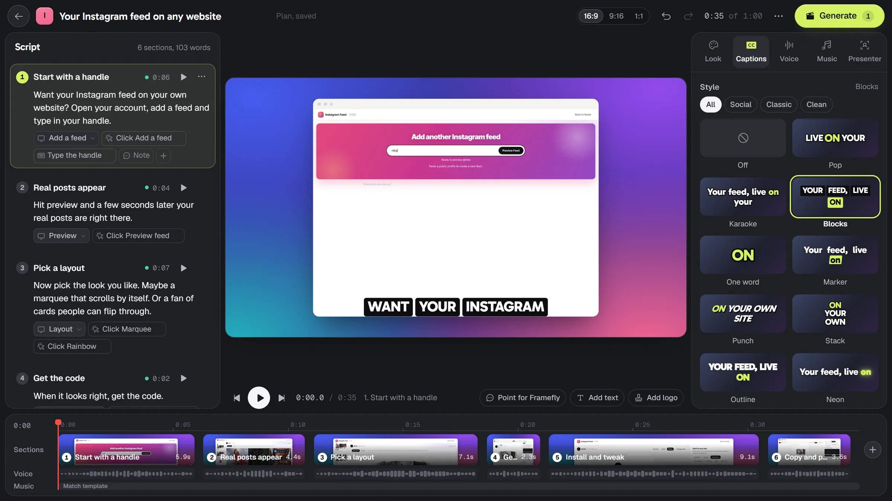
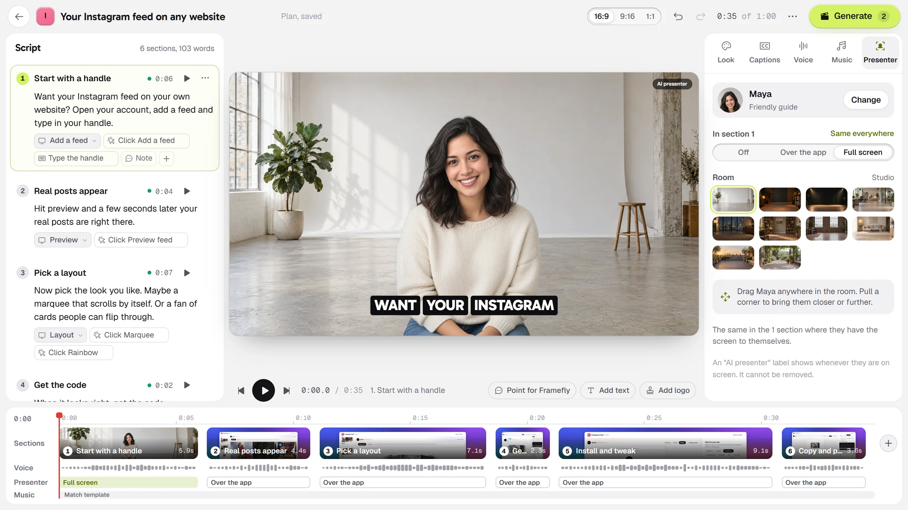
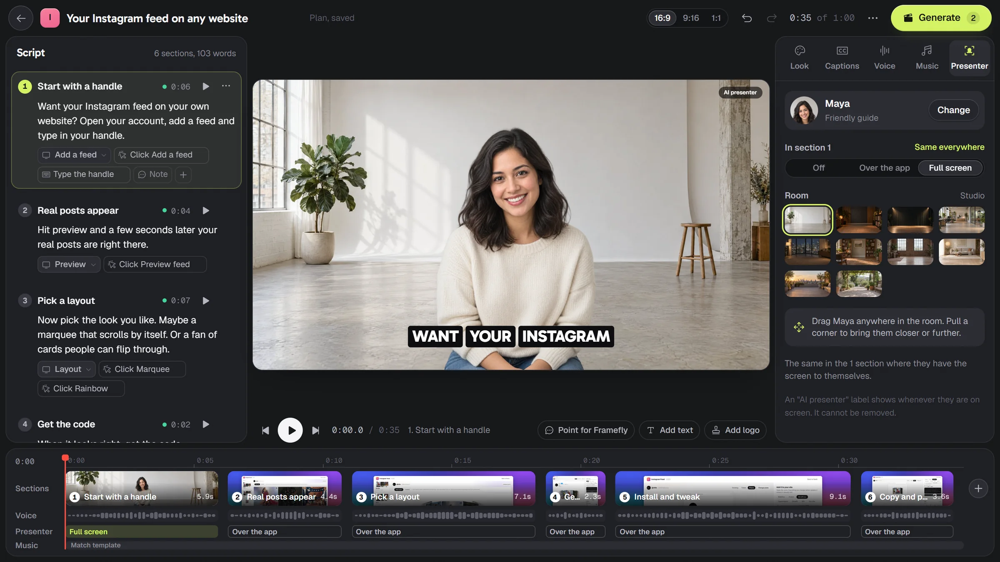

From a brief to a finished video.
Every step, shown with real screens of the app. The films and the pictures in them were made of one product, Instagram Feed.
Connect your app once.
Give Framefly a demo account and choose how it signs in. A free preflight checks that it can reach the app, sign in and find no bot wall, before any credit is used.


Password and 2FA
Paste the authenticator secret and Framefly generates the codes itself.
Its own inbox
Sign the demo account up with a Framefly address. The agent reads the codes and the magic links there.
An imported session
For Google or Microsoft sign-in, SMS codes and passkeys: sign in once in your own browser and hand over the session.
Localhost and staging
npx framefly tunnel 3000 opens a tunnel only the agent can use.


After the first exploration you get a precise checklist of what looks empty on camera.
Opt in and it creates believable records through your own interface. It may create and edit. It never deletes.
A webhook puts the account back in a known state, so every take starts the same way. Pro and Studio.
One brief is all Studio asks for.
Write what you want in plain words: who it is for, what to show, the tone, how it ends. Pick the app, a template and, if you like, a presenter.


Understood as you type
Features of your app, length, tone and ending show up as you write, so you know what was read.
Planning is free
"Plan my video" films nothing and costs nothing. A credit is only held when you press Generate.
Autopilot, if you want it
Switch off "Stop at the plan" and Framefly generates straight away. The plan step is on by default.
The whole video, before it exists.
Framefly explores your app in a real browser and writes the video. Then it opens one window where you read it, hear it and change it. Nothing has been filmed yet.


It reads like a document. Each section has its words (they are also the captions), the screen of your app it is shot on, and the steps Framefly takes there: click, type, show.
The section under the playhead, framed as it will be. It is a canvas: the app's window, the captions, the presenter and anything you add are dragged anywhere and sized from a corner.
Look, captions, voice, music, presenter. None of them sets a position: you place things on the picture.
The whole video on one line, to scale. Drag a block to move its section, add one at any boundary, scrub to any moment.




Generate is the only button that spends a credit.
The plan locks and the same window shows the video being made. You can leave: it carries on, and you get a notice when it is ready.


Filmed frame by frame, not screen-recorded.
The AI plans, code films. The agent works out what to do once and writes it down as a list of steps. A recorder replays that list on a clock of its own, one frame per sixtieth of a second, at twice the pixel density. A slow machine makes a slower shoot, never a worse picture.
Unique frames per second, against a browser recording of the same scenario.
Longest freeze: one frame, against almost a full second.
Before each take: network idle, the page calm, fonts loaded, images decoded, no spinner in sight.
Dates and random values are pinned, so a take can be filmed again and match.
The cursor follows a smooth path computed from the recorded clicks, in the shape the page asked for.
Every step ran, no black frames, loudness on target, the narration fits the picture. What fails a check is flagged for you.
Every format, every file.
One take becomes 16:9, 9:16, 1:1 and 4:5. With each come a looping GIF and caption files. Pro and Studio also get the project for your editor.


Downloads
MP4 in each shape, a GIF, SRT and VTT captions, audio stems.
A public link
One switch gives the video a page anyone can watch, and an embed for your own site.
Your editor
DaVinci Resolve, Premiere Pro or Final Cut Pro, with captions as editable text. Pro and Studio.
Marked as AI-made
Content credentials in every file and one line on the end card, as the EU AI Act asks.
Point at what should change.
Switch on "Point for Framefly", click the picture and write what is wrong. The note stays on that spot, at that moment. Only its section is made again.


The plan's window stays the video's editor for life. Change a line, a screen or a step, and the next version is made from what changed.
New words, another screen, other steps or a note: that section is shot again. A new voice, captions, music, look or order only needs a new edit.
And one full re-shoot within 7 days if you are not happy. Sections flagged by the checks are always free to fix.
Your interface changes. Your video keeps up.
On Pro and Studio, Framefly takes a light look at every connected app each week. When a screen you filmed has changed, you get an alert and re-shoot only the sections that use it.
Re-shoot on release
A GitHub Action can ask for a refresh when you ship, so the video on your landing page matches the product.
API, webhooks and a CLI
Start videos from your own tools and be told when a plan is ready or a video is delivered. Studio plan.
Where it goes next
Slack, GitHub, YouTube, Google Drive, Framer and more can receive a video the moment it is delivered.
Your app, on film, on October 28.
Framefly is live.
Leave your email and you get one message on launch day, with a link to make your first video for free.
Your first video is free, and no card is needed.
You're on the list. One email to on launch day, and nothing before.